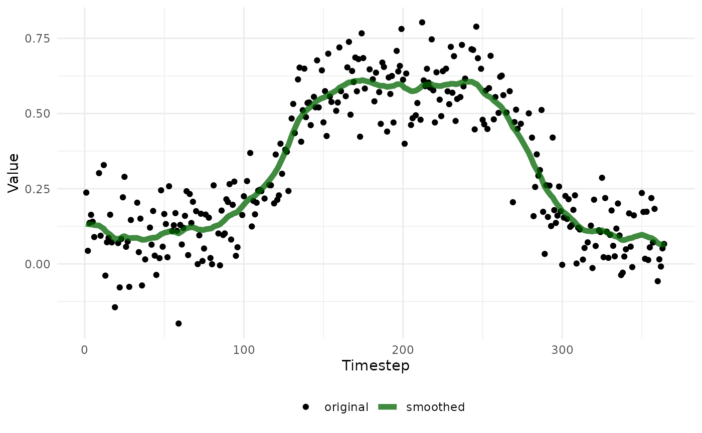

3 Miscellaneous time series processing tools
Yiluan Song
2026-02-09
Source:vignettes/tools.Rmd
tools.RmdThis package also provides tools for time series processing. These tools are not specific to PlanetScope data and can be used with any time series data, especially those with seasonality.
Gap-filling and smoothing
We set up a simulated time series with a double logistic function, which resembles the greenness of deciduous trees. We add noise to the time series and introduce some missing data.
t <- 1:365
# Double logistic function: leaf-on and leaf-off phases
double_logistic <- function(t, L = 0.1, U = 0.6, k1 = 0.1, k2 = 0.1, t1 = 120, t2 = 280) {
L + (U - L) * (1 / (1 + exp(-k1 * (t - t1)))) * (1 / (1 + exp(k2 * (t - t2))))
}
# Generate simulate_ts values using double logistic
simulate_ts <- double_logistic(t)
# Add Gaussian noise
set.seed(42)
simulate_ts <- simulate_ts + rnorm(length(t), mean = 0, sd = 0.1)
# Introduce missing data (e.g., cloud cover)
missing_idx <- sample(1:length(t), size = round(0.2 * length(t))) # 10% missing
simulate_ts[missing_idx] <- NAThe whittaker_smoothing_filling() function is used to
smooth the time series and fill in missing values within one step. Under
the hood, it uses a weighted Whittaker smoothing (the whit1
funtion from the ptw package), but we assign zero weight to
any missing value and equal weight to all other values, such that the
missing values are filled with the smoothed values.
The lambda parameter controls the smoothness of the
output. A larger value results in a smoother output, while a smaller
value retains more of the original signal. It is recommended to try
different values and visualize the time series before and after
smoothing. The maxgap parameter specifies the maximum gap
size for filling missing values. Any consecutive missing values larger
than maxgap will not be filled. The minseg
parameter specifies the minimum segment length for smoothing. Segments
shorter than this length will be treated as missing and then either left
missing or filled with smoothed values, depending on
maxgap. This option allows us to avoid smoothing over very
short segments of data that may not be representative of the overall
trend.
smoothed_ts <- whittaker_smoothing_filling(
x = simulate_ts,
lambda = 50,
maxgap = 30,
minseg = 2
)## Registered S3 method overwritten by 'quantmod':
## method from
## as.zoo.data.frame zoo
# Compare original and smoothed time series
df_compare <- data.frame(
original = simulate_ts,
smoothed = smoothed_ts
) |>
dplyr::mutate(timestep = dplyr::row_number())
ggplot(df_compare) +
geom_point(aes(x = timestep, y = original, color = "original")) +
geom_line(aes(x = timestep, y = smoothed, color = "smoothed"), linewidth = 2, alpha = 0.75) +
scale_color_manual(values = c("original" = "black", "smoothed" = "dark green")) +
theme_minimal() +
labs(
x = "Timestep",
y = "Value",
color = ""
) +
theme(legend.position = "bottom")## Warning: Removed 73 rows containing missing values or values outside the scale range
## (`geom_point()`).
Determine seasonality
The determine_seasonality() function is used to check if
a time series from one year (or one life cycle) has seasonal variations
or has no significant variations. In practice, we can use this function
to distinguish if the greenness of a tree within a year has seasonal
variations (e.g., deciduous trees) or remains relatively constant (e.g.,
evergreen trees). Under the hood, the function fits a simple linear
regression model and segmented regression models with 1 to 3 breakpoints
to a given time series. It then compares their Akaike Information
Criterion (AIC) values (with a penalty parameter k) to assess whether a
simple linear regression (i.e., non-segmented) model is preferred. The
k parameter controls the penalty for the number of
breakpoints in the calculation of AIC. A larger k means
that the favored model is more likely to be a simple linear regression
model, such that we are more conservative in concluding that the time
series has seasonal variations.
# Check if a time series is flat
example_seasonality <- determine_seasonality(
ts = simulate_ts,
k = 50
)
print(stringr::str_c("Time series has significant seasonal variation: ", example_seasonality))## [1] "Time series has significant seasonal variation: TRUE"